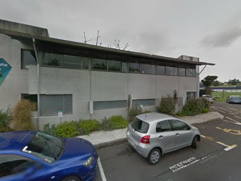
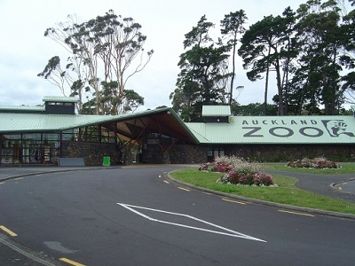
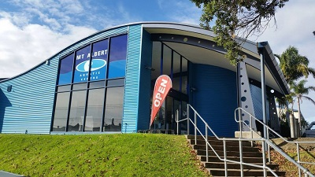

<!DOCTYPE html>
<html>
<head>
	
	<title>Simple Mt Albert Map</title>

	<meta charset="utf-8" />
	<meta name="viewport" content="width=device-width, initial-scale=1.0">
	
	<link rel="shortcut icon" type="image/x-icon" href="docs/images/favicon.ico" />

    <link rel="stylesheet" href="https://unpkg.com/leaflet@1.1.0/dist/leaflet.css" integrity="sha512-wcw6ts8Anuw10Mzh9Ytw4pylW8+NAD4ch3lqm9lzAsTxg0GFeJgoAtxuCLREZSC5lUXdVyo/7yfsqFjQ4S+aKw==" crossorigin=""/>
    <script src="https://unpkg.com/leaflet@1.1.0/dist/leaflet.js" integrity="sha512-mNqn2Wg7tSToJhvHcqfzLMU6J4mkOImSPTxVZAdo+lcPlk+GhZmYgACEe0x35K7YzW1zJ7XyJV/TT1MrdXvMcA==" crossorigin=""></script>


	<style>
            html, body, #map {
            height: 100%;
            width: 100%;
        }

	</style>

	
</head>
<body>

<div id='map'></div>

<script>

	var noImg =
    {
    'maxWidth': '200',
    }

// for when there is an image
    var img =
    {
    'maxWidth': '440',
    }


	var greenIcon = new L.Icon({
	  iconUrl: 'https://cdn.rawgit.com/pointhi/leaflet-color-markers/master/img/marker-icon-2x-green.png',
	  shadowUrl: 'https://cdnjs.cloudflare.com/ajax/libs/leaflet/0.7.7/images/marker-shadow.png',
	  iconSize: [25, 41],
	  iconAnchor: [12, 41],
	  popupAnchor: [1, -34],
	  shadowSize: [41, 41]
	});

	var yellowIcon = new L.Icon({
	  iconUrl: 'https://cdn.rawgit.com/pointhi/leaflet-color-markers/master/img/marker-icon-2x-yellow.png',
	  shadowUrl: 'https://cdnjs.cloudflare.com/ajax/libs/leaflet/0.7.7/images/marker-shadow.png',
	  iconSize: [25, 41],
	  iconAnchor: [12, 41],
	  popupAnchor: [1, -34],
	  shadowSize: [41, 41]
	});

	var redIcon = new L.Icon({
	  iconUrl: 'https://cdn.rawgit.com/pointhi/leaflet-color-markers/master/img/marker-icon-2x-red.png',
	  shadowUrl: 'https://cdnjs.cloudflare.com/ajax/libs/leaflet/0.7.7/images/marker-shadow.png',
	  iconSize: [25, 41],
	  iconAnchor: [12, 41],
	  popupAnchor: [1, -34],
	  shadowSize: [41, 41]
	});

	var greyIcon = new L.Icon({
	  iconUrl: 'https://cdn.rawgit.com/pointhi/leaflet-color-markers/master/img/marker-icon-2x-grey.png',
	  shadowUrl: 'https://cdnjs.cloudflare.com/ajax/libs/leaflet/0.7.7/images/marker-shadow.png',
	  iconSize: [25, 41],
	  iconAnchor: [12, 41],
	  popupAnchor: [1, -34],
	  shadowSize: [41, 41]
	});

	var orangeIcon = new L.Icon({
	  iconUrl: 'https://cdn.rawgit.com/pointhi/leaflet-color-markers/master/img/marker-icon-2x-orange.png',
	  shadowUrl: 'https://cdnjs.cloudflare.com/ajax/libs/leaflet/0.7.7/images/marker-shadow.png',
	  iconSize: [25, 41],
	  iconAnchor: [12, 41],
	  popupAnchor: [1, -34],
	  shadowSize: [41, 41]
	});

	var violetIcon = new L.Icon({
	  iconUrl: 'https://cdn.rawgit.com/pointhi/leaflet-color-markers/master/img/marker-icon-2x-violet.png',
	  shadowUrl: 'https://cdnjs.cloudflare.com/ajax/libs/leaflet/0.7.7/images/marker-shadow.png',
	  iconSize: [25, 41],
	  iconAnchor: [12, 41],
	  popupAnchor: [1, -34],
	  shadowSize: [41, 41]
	});

	var schools = L.layerGroup();
	var medical = L.layerGroup();
	var churches = L.layerGroup();
	var parks = L.layerGroup();
	var community = L.layerGroup();
	var retail = L.layerGroup();
	var trainStations = L.layerGroup();


	
	//Schools (red icon)

	L.marker([-36.889338, 174.711722],{icon: redIcon}).bindPopup('<a href="img/Hebron Christian College BM June 2017.jpg"></a><br><b>Hebron Christian College</b><br>1 McLean St<br>(09) 846 2159',img).addTo(schools);	

	L.marker([-36.885231, 174.725578],{icon: redIcon}).bindPopup('<a href="img/MAGS 4, BM June 2017.jpg"></a><br><b>Mt Albert Grammar School</b><br>Alberton Avenue<br>(09) 846 2044',img).addTo(schools);	

	L.marker([-36.877826, 174.731594],{icon: redIcon}).bindPopup('<a href="img/Schools Mt Albert Primary, BM, June 2017.jpg"></a><br><b>Mt Albert Primary School</b><br>6 Sainsbury Rd<br>(09) 846 9288',img).addTo(schools);	

	L.marker([-36.888219, 174.725849],{icon: redIcon}).bindPopup('<a href="img/Te Kura Kaupapa, BM, August 2017.jpg"></a><br><b>Te Kura Kaupapa Maori o Nga Maugarongo</b><br>140 Haverstock Rd<br>(09) 815 6349',img).addTo(schools);

	L.marker([-36.881149, 174.725383],{icon: redIcon}).bindPopup('<a href="img/Schools Marist College 1, BM, June 2017.jpg"></a><br><b>Marist College</b><br>14 Kitenui Avenue<br>(09) 846 7408',img).addTo(schools);	

	L.marker([-36.895821, 174.716051],{icon: redIcon}).bindPopup('<a href="img/Schools Owairaka Primary School, BM, June 2017.jpg"></a><br><b>Owairaka District School</b><br>113-115 Richardson Rd<br>(09) 846 5091',img).addTo(schools);

	L.marker([-36.879414, 174.712088],{icon: redIcon}).bindPopup('<a href="img/Schools, Gladstone, BM, July 2017.jpg"></a><br><b>Gladstone Primary School</b><br>8 Seaview Terrace<br>(09) 846 9744',img).addTo(schools);

	L.marker([-36.865773, 174.717622],{icon: redIcon}).bindPopup('<a href="img/Schools Pasadena 1.jpg"></a><br><b>Pasadena Intermediate School</b><br>Moray Place<br>(09) 846 2169',img).addTo(schools);

	L.marker([-36.872593, 174.748253],{icon: redIcon}).bindPopup('<br><b>Kowhai Intermediate</b><br>26 Onslow Rd<br>(09) 846 7534',img).addTo(schools);
	//This kowhai image is very low res- no point linking to a bigger version, just used it as the thumbnail. Maybe find a better image somewhere?

	L.marker([-36.903193, 174.730427],{icon: redIcon}).bindPopup('<b>Wesley Intermediate</b><br>766-778 Sandringham Rd<br>(09) 620 9367',noImg).addTo(schools);

	L.marker([-36.882506, 174.719180],{icon: redIcon}).bindPopup('<a href="img/Schools, Ferndale Kindy, BM, July 2017.jpg"></a><br><b>Ferndale Kindergarten</b><br>830 New North Rd<br>(09) 846 6909',img).addTo(schools);

	L.marker([-36.882069, 174.709479],{icon: redIcon}).bindPopup('<br><b>Mt Albert Kindergarten</b><br>24 Mark Road<br>(09) 846 4379',img).addTo(schools);

	//These two images are only logos, no point linking to anything

	L.marker([-36.894871, 174.714427],{icon: redIcon}).bindPopup('<br><b>Owairaka Kindergarten</b><br>6a Dunkirk Terrace<br>(09) 846 5476',img).addTo(schools);

	


	//Churches (yellow icon)

	L.marker([-36.881835, 174.719232],{icon: yellowIcon}).bindPopup('<br><b>Mount Albert Methodist Church</b><br>831 New North Rd<br>(09) 849 5174',img).addTo(churches);

	L.marker([-36.884718, 174.716911],{icon: yellowIcon}).bindPopup('<br><b>Mount Albert Presbyterian Church</b><br>14 Mt Albert Rd<br>(09) 846 7576',img).addTo(churches);

	L.marker([-36.878181, 174.728977],{icon: yellowIcon}).bindPopup('<a href="img/Churches St Lukes Anglican Church.jpg"></a><br><b>St Lukes Anglican Church</b><br>704 New North Rd<br>(09) 846 6046',img).addTo(churches);

	L.marker([-36.895698, 174.731529],{icon: yellowIcon}).bindPopup('<br><b>Salvation Army Mt Albert</b><br>218 Mount Albert Rd<br>(09) 629 5063',img).addTo(churches);

	L.marker([-36.881373, 174.725138],{icon: yellowIcon}).bindPopup('<br><b>St Mary’s Catholic Church</b><br>18/16 Kitenui Ave<br>(09) 846 6775',img).addTo(churches);

	L.marker([-36.879883, 174.726770],{icon: yellowIcon}).bindPopup('<br><b>Mt Albert Baptist Church</b><br>732 New North Rd<br>(09) 849 2849',img).addTo(churches);


	//Medical (default blue icon)

	L.marker([-36.879883, 174.726770]).bindPopup('<a href="img/Doctors, Four Kauris, BM, July 2017.jpg"></a><br><b>Four Kauri Family Medical Centre</b><br>880 New North Rd<br>(09) 846 0002',img).addTo(medical);

	L.marker([-36.885705, 174.714134]).bindPopup('<a href="img/doctors mt albert medical and dental centre.jpg"></a><br><b>Mt Albert Medical and Dental Centre</b><br>986 New North Rd<br>(09) 846 7493',img).addTo(medical);

	L.marker([-36.895887, 174.731870]).bindPopup('<br><b>Alberton Medical Practice</b><br>230 Mt Albert Rd<br>(09) 629 2088',img).addTo(medical);

	L.marker([-36.885034, 174.735695]).bindPopup('<br><b>St Lukes Medical Centre</b><br>99 St Lukes Rd<br>(09) 815 1124',img).addTo(medical);

	L.marker([-36.876951, 174.706971]).bindPopup('<br><b>Unitec Student Health</b><br>Carrington Road (Building 28 Room 1023)<br>(09) 815 4321, ext 7248',img).addTo(medical);

	L.marker([-36.881883, 174.731440]).bindPopup('<a href="img/White Cross, BM, 2017.jpg"></a><br><b>White Cross Accident and Medical</b><br>52 St Lukes Rd<br>(09) 815 3111',img).addTo(medical);

	L.marker([-36.869989, 174.710906]).bindPopup('<br><b>Pt Chevalier Medical and Surgical Centre</b><br>1181 Great North Rd<br>(09) 846 6244',img).addTo(medical);


	//Parks and Reserves (green)


	L.marker([-36.866470, 174.721514],{icon: greenIcon}).bindPopup('<a href="img/Western Springs F, BM, 2017.jpg"></a><br><b>Western Springs Park</b><br>Great North Rd',img).addTo(parks);

	L.marker([-36.882475, 174.703042],{icon: greenIcon}).bindPopup('<a href="img/Oakley Creek 5, BM, 2017.jpg"></a><br><b>Oakley Creek</b><br>Entry Phyllis St',img).addTo(parks);

	L.marker([-36.883261, 174.728002],{icon: greenIcon}).bindPopup('<a href="img/Roy Clements 6, BM, 2017.jpg"></a><br><b>Roy Clements Treeway</b><br>Entry Alberton Ave, Wagener Pl or Lyon Ave',img).addTo(parks);

	L.marker([-36.890408, 174.719978],{icon: greenIcon}).bindPopup('<a href="img/Mountain A, BM, July 2017.jpg"></a><br><b>Mount Albert - Owairaka Domain</b><br>Entry from Summit Drive',img).addTo(parks);
	
	L.marker([-36.879748, 174.725387],{icon: greenIcon}).bindPopup('<br><b>Rocket Park</b><br>New North Rd',img).addTo(parks);

	L.marker([-36.880831, 174.722604],{icon: greenIcon}).bindPopup('<a href="img/Alice Wylie park 3, BM, February 2017.jpg"></a><br><b>Alice Wylie Park</b><br>New North Rd',img).addTo(parks);

	L.marker([-36.895938, 174.722067],{icon: greenIcon}).bindPopup('<a href="img/Parks Owairaka Park 2, BM, 2017.jpg"></a><br><b>Owairaka Park</b><br>50-60 Owairaka Ave',img).addTo(parks);

	L.marker([-36.874374, 174.728686],{icon: greenIcon}).bindPopup('<a href="img/Fowlds Park.jpg"></a><br><b>Fowlds Park</b>',img).addTo(parks);


	//Community, Education and Local Attractions (violet)

	L.marker([-36.867639, 174.727102],{icon: violetIcon}).bindPopup('<a href="img/Motat 2, BM May 2017.jpg"></a><br><b>MOTAT (Museum of Transport and Technology)</b><br>Great North Rd<br>(09) 815 5800',img).addTo(community);

	L.marker([-36.864107, 174.719695],{icon: violetIcon}).bindPopup('<br><b>Auckland Zoo</b><br>Motions Rd<br>(09) 360 3805',img).addTo(community);

	L.marker([-36.879093, 174.725395],{icon: violetIcon}).bindPopup('<br><b>Mt Albert War Memorial Hall</b><br>New North Rd',img).addTo(community);

	L.marker([-36.878543, 174.725466],{icon: violetIcon}).bindPopup('<a href="img/YMCA, BM, June 2017.jpg"></a><br><b>Mount Albert Community and Leisure Centre (YMCA)</b><br>773 New North Rd<br>(09) 846 0788',img).addTo(community);

	L.marker([-36.883877, 174.726128],{icon: violetIcon}).bindPopup('<br><b>Mt Albert Aquatic Centre</b><br>Alberton Ave<br>(09) 815 7001',img).addTo(community);

	L.marker([-36.873621, 174.720898],{icon: violetIcon}).bindPopup('<a href="img/AIS, BM June 2017.jpg"></a><br><b>Auckland Institute of Studies (AIS)</b><br>28A Linwood Ave<br>(09) 815 1717',img).addTo(community);

	L.marker([-36.885145, 174.718639],{icon: violetIcon}).bindPopup('<a href="img/Bowls at Mt Albert Bowls Club have a go day.jpg"></a><br><b>Mt Albert Bowling Club</b><br>10 Allendale Rd<br>(09) 846 6128',img).addTo(community);


	//Retail (orange)

	L.marker([-36.892847, 174.705992],{icon: orangeIcon}).bindPopup('<br><b>Pak n Save Mt Albert</b><br>1167-1177 New North Rd<br>(09) 820 0218',img).addTo(retail);

	L.marker([-36.882812, 174.733781],{icon: orangeIcon}).bindPopup('<br><b>Countdown St Lukes</b><br>St Lukes Mall (80 St Lukes Rd)<br>(09) 846 3829',img).addTo(retail);

	L.marker([-36.883032, 174.732792],{icon: orangeIcon}).bindPopup('<a href="img/St Lukes, BM, 2017.jpg"></a><br><b>St Lukes Mall</b><br>St Lukes Mall (80 St Lukes Rd)<br>(09) 846 3829',img).addTo(retail);


	//Train stations (grey)

	L.marker([-36.884729, 174.714157],{icon: greyIcon}).bindPopup('<a href="img/Railway station 2, BM, July 2017.jpg"></a><br><b>Mt Albert Train Station</b><br>Entry from New North Rd or Carrington Rd',img).addTo(trainStations);

	L.marker([-36.877704, 174.720461],{icon: greyIcon}).bindPopup('<b>Baldwin Ave Train Station</b><br>Entry from Baldwin Ave, or Doreen Ave/Margaret Ave',noImg).addTo(trainStations);


	var mbAttr = 'Map data &copy; <a href="http://openstreetmap.org">OpenStreetMap</a> contributors, ' +
			'<a href="http://creativecommons.org/licenses/by-sa/2.0/">CC-BY-SA</a>, ' +
			'Imagery © <a href="http://mapbox.com">Mapbox</a>',
		mbUrl = 'https://api.tiles.mapbox.com/v4/{id}/{z}/{x}/{y}.png?access_token=pk.eyJ1IjoibWFwYm94IiwiYSI6ImNpejY4NXVycTA2emYycXBndHRqcmZ3N3gifQ.rJcFIG214AriISLbB6B5aw';
		streets  = L.tileLayer(mbUrl, {id: 'mapbox.streets',   attribution: mbAttr}),
		Esri_WorldImagery = L.tileLayer('http://server.arcgisonline.com/ArcGIS/rest/services/World_Imagery/MapServer/tile/{z}/{y}/{x}', {
	attribution: 'Tiles &copy; Esri &mdash; Source: Esri, i-cubed, USDA, USGS, AEX, GeoEye, Getmapping, Aerogrid, IGN, IGP, UPR-EGP, and the GIS User Community'
	});

	var map = L.map('map', {
		center: [-36.884, 174.714],
		zoom: 13,
		minZoom: 13,
		layers: [streets, churches, schools, medical, parks, community, retail, trainStations]
	});

	var baseLayers = {
		"Streets": streets,
		"Satellite": Esri_WorldImagery
	};

	var overlays = {
		"Churches": churches,
		"Schools": schools,
		"Medical": medical,
		"Parks and Reserves": parks,
		"Community, Education and Local Attractions": community,
		"Retail": retail,
		"Train Stations": trainStations
	};

	L.control.layers(baseLayers, overlays).addTo(map);
</script>


</body>
</html>
